How I wish I could finally master git and not bother others with my can-not-solved questions!🙇♀️
命令简介
本地操作
git config
1 | 配置基础选项 |
git 查找配置的顺序如下，每层配置都会覆盖掉上一层配置。
- 系统配置，存储于
/etc/gitconfig，可作用于系统中每一位用户，选项为--system - 全局配置，存储于用户的
~/.gitconfig或~/.config/git/config，选项为--global - 本地配置，存储与仓库的
.git/config，选项为--local
我自己的话，通常还会想看看我都配置了哪些 config，可以用 list 选项：
1 | 显示全部 |
介绍几个常用的配置：commit.template，默认的提交信息模板；user.signingkey，gpg 签署密钥；core.excludesfile，所有项目都忽略的文件(eg. macOS 的 .DS_Store)；core.autocrlf，是否在提交的时候把 CRLF 换成 LF。
git init
1 | cd projectDirectory |
创建了一个 .git 目录，里面存了一个版本库。
git add
1 | git add fileName |
将文件作为提交内容放到暂存区(staging area)，同时清除工作区相关内容。
git rm
将文件从仓库删去。现在仓库中无该文件，工作目录上也无该文件，该文件被删除的动作被自动存入暂存区。
1 | git rm fileName |
将文件从暂存区删去，同时将其从工作目录删去，需要使用 -f 选项，这是一种防止误删的安全特性。现在暂存区无该文件，工作目录也无该文件。
1 | git rm -f fileName |
将文件从暂存区删去，同时仍将其保留在工作目录中，需要使用 --cached 选项。现在暂存区无该文件，工作目录有该文件。
1 | git rm --cached fileName |
git mv
重命名文件。
1 | git mv fileFrom fileTo |
git 使用哈希值而非文件名来跟踪文件快照，因此当我们给文件重命名时，它内部是没什么体现的。不过聪明的 git 可以推断出改名行为，因此当我们使用 git mv 命令后使用 git status 查看，它会显示 renamed fileFrom -> fileTo。
实际上运行 git mv 相当于运行了下面三条命令。
1 | mv fileFrom fileTo |
git commit
1 | git commit --message "commit message" |
将暂存区的修改内容传送到版本库中，并赋予一个提交哈希值，同时清空暂存区。每个提交包括哈希值、作者、日期、提交信息、和上一个提交相比发生的变化、项目所有的文件。
1 | git commit --amend |
将暂存区的文件提交，有两种使用场景：一是当提交后忘了暂存某些需要的修改，可以在提交过后再进行 git add 和 git commit --amend 来修复这一失误，替换掉旧有的最后一次提交；二是当上次提交之后我们没有做任何修改，这时使用 git commit --amend 则是用来修改提交信息的。前者的使用需要小心，因为它会改变提交的 SHA-1 校验和，类似于一个小的变基——如果已经推送了最后一次提交就不要修正它。
* 补充说明
git 会保存文件的访问权限，但不会保存修改时间。因为在检出的时候，文件的修改时间会被设置为当前时间。为什么不保存呢？因为很多构建工具会根据「最后一次修改时间」和「最后一次构建的时间」来决定是否重新构建。当检出时，会回退到之前的版本，这时我们会希望能够重新构建，如果按照真实的修改时间来，则无法触发构建，因此我们在检出时将修改时间设置为当前时间，这样就能正确而顺畅地构建了。
git status
获取变化。
1 | git status |
显示自上次提交开始，哪些文件已被修改，哪些修改将被纳入下一次提交。
也可以控制显示的内容格式。新添加的未跟踪文件前面有 ?? 标记，新添加到暂存区中的文件前面有 A 标记，修改过的文件前面有 M 标记。
1 | git status --short # 输出更加紧凑 |
git diff
获取差异。
1 | git diff # 暂存区和工作区之间的区别，也就是修改后还没暂存的内容 |
还可以获得更加细节的修改内容。
1 | git diff fileName |
还可以获取提交之间的差异清单，可以用哈希值、分支、标签、HEAD 等。
1 | git diff hashValue HEAD # 两次提交的差异 |
还有一种常用的三点语法。
背景是这样的：当我们想知道某个分支(eg. dev)和另一个分支(eg. master)的区别，我们一般可以使用 git diff master 来查看 dev 新增的修改。当 master 是 dev 的直接祖先，当然可以得到想要的结果；但一旦两个分支的历史产生了分叉，比如说 master 上有新提交，那么得到的 diff 就是「将 dev 中所有的新东西加入，且将 master 中独有的东西删除」，而不是「dev 新增的修改」。因为实际上和 dev 用 diff 对比的是 master 的最新快照，而不是它的祖先。
解决方案有两种：一是手动找到公共祖先，并对其显示运行 diff；二是使用三点语法，将某分支(eg. dev)最新提交和两个分支公共祖先进行比较。
1 | 方法一 |
git log
输出历史。
1 | git log |
也可以部分输出、格式化输出、获取统计信息。
1 | git log -n 3 # 显示最新三次提交 |
git reflog
当你在工作时， git 会在后台保存一个引用日志(reflog)， 引用日志记录了最近几个月 HEAD 和分支引用所指向的历史。
1 | git reflog |
可以使用 @{} 语法来引用提交。
1 | git show HEAD@{5} # 查看 HEAD 在 5 次前所指向的提交 |
每当 HEAD 所指向的位置发生了变化，git 就会把这个信息存储到引用日志中。要注意的是，它只是记录了我们在「自己」仓库里做什么的「本地」日志，比如当我们新克隆一个仓库时，引用日志就是空的。
git reset
重置暂存区，第一个参数为重置目标，第二个参数为需要被重置的文件。
1 | git reset HEAD . # 将暂存区所有内容重置为版本库中的 HEAD 版本 |
适用场景有，当我们修改了两个文件并且想要将它们作为两次独立的提交，却不小心将它俩都 git add 到了暂存区，这时我们就可以使用 git reset 来把其中一个文件从暂存区先撤出来。
1 | git add * |
* 补充一个知识点
在上面的场景中，如果我们后续并不想保留 CONTRIBUTING.md 文件的工作区修改，我们可以使用 git checkout -- fileName 来将其还原成上次提交的样子(git status 也给了我们提示)。
1 | git checkout -- CONTRIBUTING.md |
* 补充一个详细例子
pro git book 7.7 中的重置揭秘。
git revert
场景：假设现在在一个主题分支上工作，不小心将其合并到 master 中，如下，现在我们想要撤销这次合并。
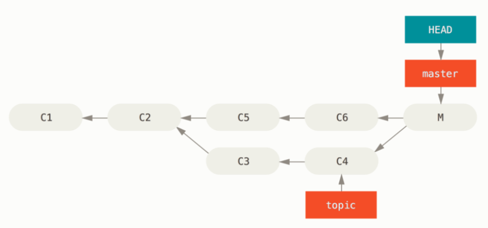
方法一，修复引用，使用 git reset --hard HEAD~ 重置分支，如下。
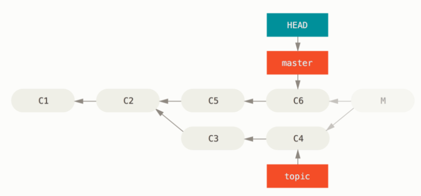
方法二，还原提交，也就是现在的主题。
1 | git revert -m 1 HEAD |
merge 后的新节点有两个父节点，第一个是 HEAD(C6)，第二个是将要合并入分支的最新提交(C4)。这里的 -m 1 指出保留 mainline 1 的父节点，也就是撤销由父节点 2(C4)合并引入的修改，保留从父节点 1(C6) 开始的所有内容。结果如下：
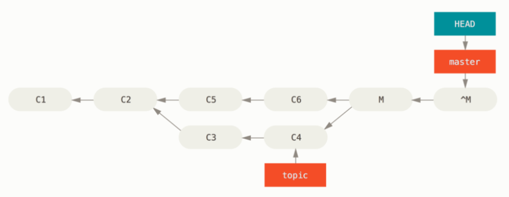
^M 与 C6 有完全一样的内容，从这儿开始就像合并从来没发生过，但是还是有一点不一样的。比如我们想再次将 topic 合并到 master，会出现下面的结果：
1 | git merge topic |
看到这里我们会觉得，居然是 already up-to-date？没错，topic 中并没有东西不能从 master 中追踪到达。更加糟糕的是，如果我们在 topic 上增加工作后再合并，git 只会引入被还原的合并之后的修改。如下图，这里只合入了 C7。
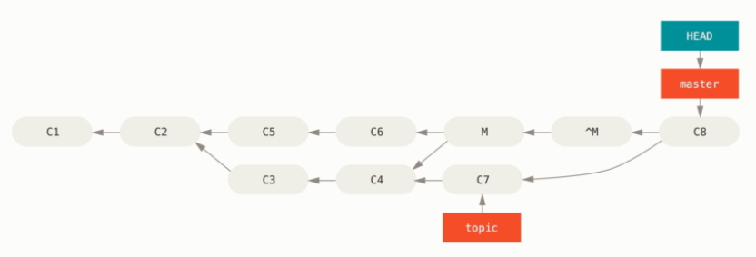
解决办法是撤销还原原始的合并，因为我们此时想引入被还原出去的修改(C3 和 C4)，然后再创建新的合并提交。
1 | git revert ^M |
结果如下图，这里 M 与 ^M 抵消了。^^M 合并了 C3 和 C4 的修改，C8 合并了 C7 的修改，现在的 topic 已经完全被合并了。
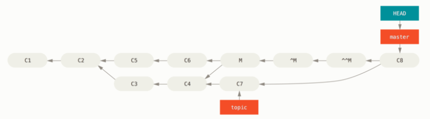
git stash
暂时将工作区和暂存区的内容保存到本地储藏栈(stash stack)。
1 | git stash |
适用场景一般有，当我们在工作区处理某个事情到一半，突然发现要快速修复某个问题。此时我们希望立即去着手做相关修改，同时先不提交之前一直在做的事情。
1 | git stash list # 检查当前储藏了什么修改内容 |
压栈的时候，有可能部分修改已暂存部分修改未暂存，上面也展示了怎样重新暂存(使用 --index)。只要是已跟踪的文件，它都会保存；如果指定 --include-untracked 或 -u 选项，则会额外地把未跟踪文件也贮藏起来；如果指定 --all 或 -a 选项，则会更额外地把明确忽略的文件也贮藏起来。
有一种情况，当贮藏了一些修改，在工作区对有交集的文件进行了一定的修改，之后重新应用时候可能会有合并冲突。这时有两种解决方法，一是慢慢解决冲突，二是可以使用 git stash branch <branchName> 来以指定的分支名创建一个新分支，检出贮藏工作时所在的提交，重新应用，应用成功后再丢弃贮藏。
1 | git stash branch testchanges |
git clean
用来清理工作目录。它被设计为从工作目录中移除没有被忽略的未跟踪的文件，如果突然改变主意不一定能找回之前的文件内容，因此使用时候要谨慎。
1 | 移除工作目录中所有未追踪的文件和空的子目录 |
为了安全起见，可以使用 --dry-run 或 -n 选项，它会告诉我们如果这么做，将会移除哪些文件，相当于一次演练。
1 | git clean -d -n |
默认情况下，它不会去移除已被 .gitignore 忽略的文件，如果想要移除那些文件，可以使用 -x 选项。
1 | git clean -n -d |
git fsck
哈希值是根据提交里的其他信息计算出来的，不同提交基本上不会计算出相同的哈希值($2^{160}$种可能性)。可以通过一个命令来查看版本库的完整性，也就是验证一下当前存储的哈希值是否和计算值一致。
1 | git fsck |
当使用 --full 选项时，它会显示所有没有被其它对象所指向的对象。
协同操作
git clone
1 | git clone repositoryUrl projectDirectory |
git pull
1 | git pull |
这个操作把原版本库的修改拉取过来，并与本地的修改进行对比，再合并(merge)两边的修改，创建新的提交。之所以知道原版本库的地址，是因为本地版本库将路径存到了 .git 中。 如果没冲突，就可以正常合并；如果有冲突，就必须手动操作，再确认要提交哪些修改(这个提交指的就是合并时的提交)。
最后的 log 应该如下。
1 | hashValue Merge branch `master` of repositoryUrl # 最新的合并产生的提交 |
如果想从指定的版本库中拉去内容，需要带参数。
1 | git pull repositoryUrl branchName |
git push
1 | git push |
同样也可以指定推送到哪个版本库，需要加参数。
1 | 下面的三条命令都是等价的 |
push 也有可能被拒绝，当被推送的版本库中有我们本地没有的提交时。这个时候就要用 pull 或 fetch 将这个提交拉到本地，在本地合并好后再 push。
git remote
可以给常用的 repository url 起别名，这样之后就不用输入完整 url 了。
1 | git remote add specialRepoName file:///tmp/git-book-clone.git |
还可以修改别名。
1 | git remote rename specialRepoName newRepoName |
当然也可以删除别名。
1 | git remote rm specialRepoName # 或 rm -> remove |
可以用 --verbose 选项看版本库中存储的，用于获取或推送提交的路径(感觉有点类似 list)。其中 origin 是当我们使用 git clone 命令时，git 给我们克隆的仓库服务器的默认名字。
1 | git remote --verbose |
还可以附加 show 指令来查看某个远程仓库的详细信息。
1 | git remote show origin |
裸版本库
想要 push 能够成功，必须保证这个被推送到的仓库里没有开发者在上面开展具体工作(即在当下不容易产生新的提交)，最好的办法就是创建一个不带工作区的版本库(.git 文件)，也叫裸版本库(bare)，它可以充当开发者们传递提交(通过 push)的汇聚点。
1 | git clone --bare repositoryUrl bareRepositoryUrl |
关于祖先引用
祖先引用是另一种指明一个提交的方式，当使用 ^ 时，表示的是 parents；当使用 ~ 时，表示的是 ancestors。Stackoverflow 有个提问的图解可以参考。
1 | git show HEAD^ # HEAD 的父提交 |
1 | git show HEAD~ # HEAD 的父提交 |
这两个语法可以组合使用，比如 HEAD~3^2 表示 HEAD 的第一父提交的第一父提交的第一父提交的第二父提交。
关于提交区间
提交区间用于指定一个区间的提交，以下图为例介绍几种语法。
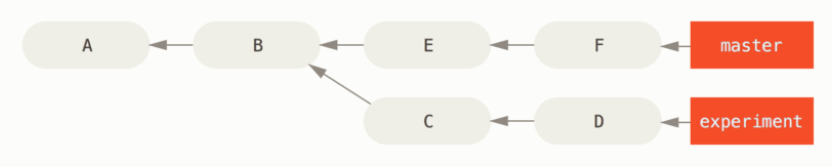
双点
使用 ..，左右分别放分支名，当留空了其中的一边时，git 会默认为 HEAD。
1 | 在 experiment 分支中而不在 master 分支中的提交 |
多点
使用 ^ 或 --not 来指明不希望提交被包含在某分支。
1 | 在 refB 分支中而不在 refA 分支中的提交 |
三点
使用 ...，可以选择出被两个引用之一包含但又不被二者同时包含的提交。
1 | master 或 experiment 中包含的但不是二者共有的提交 |
.gitignore
用来忽略不需要版本控制的文件。
1 | .gitignore file |
也可以通过把 .gitignore 放到某个文件夹里，来控制某个文件夹下要忽略哪些内容。
还要注意的是，它只能忽略当前还不存在于版本控制下的文件。如果某个符合忽略条件的文件已经在版本库中了，那它的改变还是会被记录和存储，无法忽略，除非用 update-index 命令的 --assume-unchanged 选项。
.gitattributes
用来针对特定的路径配置某些设置项，比如可以用来对不同文件定义不同的合并策略、让 git 知道怎么比较非文本文件、让 git 在提交或检出前过滤内容等。下面举几个例子。
- 识别二进制文件
比如有些文件表面是文本文件，但是实际上应该被作为二进制文件处理。也就是我们不应该用文本的区别来决定怎么合并，它本应被机器处理。
1 | 把 .pbxproj 当作二进制文件。 |
- 比较二进制文件
比如对一个 word 文档做了修改，但是 diff 对常规二进制文档来说，只能知道他们不一样，但是完全看不出具体区别。不过所幸 git 有 word 过滤器，把文件设置为它就可以以 word 的姿势识别文件区别。
1 | 给 .docx 使用 word 过滤器 |
上面的 .gitattributes 生效的前提是，要下载一个过滤器(eg. docx2txt)，安装其并将其设置为 word 过滤器，它就可以把 word 文本转换成文本文件进行比较了。
1 | 1. 按照 INSTALL 将其下载放到可执行路径下 |
1 | 之前 |
1 | 之后 |
- 导出版本库
比如当项目归档时，我们不希望一些文件或目录被包含在导出的压缩包(tarball)中。
1 | 归档时不导出 test/ |
- 合并策略
比如指定某些文件的合并策略。
1 | 让 database.xml 使用 ours 的合并策略 |
上面的 .gitattributes 生效的前提是，设置一个叫 ours 的合并策略。
1 | git config --global merge.ours.driver true |
复杂操作
关于 branch
对于过去大多数版本控制系统，它们在创建分支时，都是将所有的项目文件都复制一遍，并保存到一个特定的目录。而 git 的分支实质上仅是包含所指对象校验和(长度为 40 的 SHA-1 值字符串)，因此它的创建和销毁都非常高效，比如创建一个分支只需要往一个文件中写入 41 个字节(40 个字符和 1 个换行符)。
查看分支
1 | git branch |
可以加 -v 来查看每个分支的最后一次提交。
1 | git branch -v |
可以使用 --merged 和 --no-merged 来过滤列表中已经合并/尚未合并到当前分支的分支。
1 | git branch --merged # 这里除了带 * 的，其它通常都可以直接删掉，因为已经合入了 |
可以加 -r 来查看远程跟踪分支。远程跟踪分支是 fetch 时 git 设置的书签，该书签指向抓取目标分支在其它版本库中的位置。默认情况下，git clone 命令会自动设置本地 master 分支跟踪克隆的远程仓库的 master 分支。
1 | git branch -r |
可以加 -vv 来查看设置的所有远程跟踪分支、分支的领先落后关系等。不过要注意，这些信息来自上次从服务器上抓取的数据，它并没有连接服务器，而是读取了本地缓存的服务器数据，因此如果想要统计最新的领先落后数据，则需要先用 git fetch --all 再抓取一遍。
1 | git branch -vv |
* 如何知道当前在哪个分支上呢？
git 通过一个名为 HEAD 的特殊指针来判断，它指向的是当前所在的本地分支。当使用 git checkout 进行分支切换的时候，移动的就是 HEAD 指针。当在目前分支有了新的提交后，该分支向前移动，HEAD 指针也会随之自动向前移动。
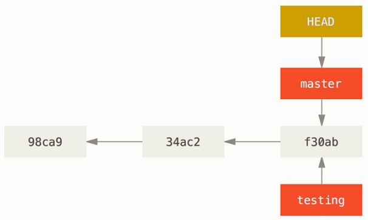
切换分支
1 | git checkout aBranch |
* 当尝试切换的分支不存在且刚好只有一个名字与之匹配的远程分支，那么 git 就会同时创建一个跟踪分支。
创建分支
1 | git branch newBranch # 为当前提交创建分支 |
创建并切换分支
1 | git checkout -b newBranch baseName # 这里的 baseName 就是新分支基于的地方 |
加入想要在本地创建一个从跟踪远端分支的新分支，还有一种快捷方式，下面的两个命令等价。
1 | git checkout -b dev origin/dev |
删除分支
1 | 删除本地 |
恢复分支
1 | 已知哈希值时 |
当删除一个分支时，git 只是删除了指向相关提交的指针，但该提交对象依然在版本库中，因此只要知道这个提交的哈希值，就可以把已删除的分支恢复过来。reflog 用于查看 git 中存储的，每次提交中对分支指针做出的修改。
修改跟踪分支
1 | git branch -u origin/aBranch |
为本地分支修改正在跟踪的上游分支。
* 设置好跟踪分治后可以通过 @{upstream} 或 @{u} 来引用上游分支，比如想要 git merge origin/master 时，可以使用命令 git merge @{u}。
清理提交对象
1 | git gc |
移除不属于当前分支的提交对象。
重置分支指针
1 | git reset --hard hashValue |
分支指针用于指向活动分支，每次提交时它都会移动到最新提交上。上例将指针重置到了提交 hashValue 所在的活动分支上，--hard 用于确保工作区和暂存区指针都在该提交上。
关于 merge
merge 的本质是将两条线上的不同修改给都包括进来，产生一个新的提交。图示如下，这里的 F 就是新的提交。
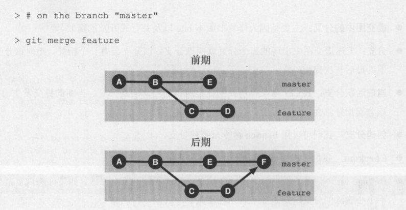
至于合并的方法，就是找到最后一个共同的祖辈提交，和两条线上的两个版本作对比，以确定最终的合并结果。图示如下，思路还是很显而易见的。git 给找共同的提交父辈提供了几种算法：递归算法、三路算法、octopus 算法。
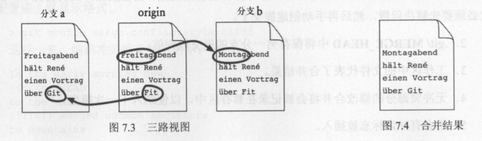
当然会存在同时修改了同一处的问题，也就是冲突。
冲突前后
遇到冲突会有如下显示。
1 | git merge aBranch |
这里有几个要注意的：
- git 通常会在合并之后自动创建提交，不过这种情况下不行，要手动解决冲突再手动提交
.git/MERGE_HEAD中保存了另一分支的提交哈希值(是另一分支提交而不是最后合并的提交！)- 工作区内容为合并结果
字符串文本的冲突部分会有冲突标志，显示如下。解决这种冲突可以直接手动编辑。
1 | 默认两路显示 |
二进制文本的冲突则没有冲突标志，而是需要我们区查看原始版本的并拷贝一下。解决这种冲突就没那么方便了，具体如下。
1 | git show :1:picture.png > ancestor.png # 祖辈版本 |
解决完冲突就可以快乐地 git add 注册修改并进行 git merge/rebase --continue 来继续（或者不好的做法是 git commit 提交修改）。
合并完冲突后可以通过 git diff 看自己和对方引入的修改。
1 | git diff --ours # 查看这次合并中我们引入的改动 |
如果在合并或解决冲突时出错了，可以取消合并，这样工作区就不会有我们合并的踪迹，git 中也不会在下轮提交中出席那合并提交。
1 | git reset --merge |
快速合并
当 git 在合并时候发现俩分支中只有一个在持续工作，那么这个合并就只用移动指针，而不需要产生合并提交了，这就是快速合并，也是默认的行为。图示如下。
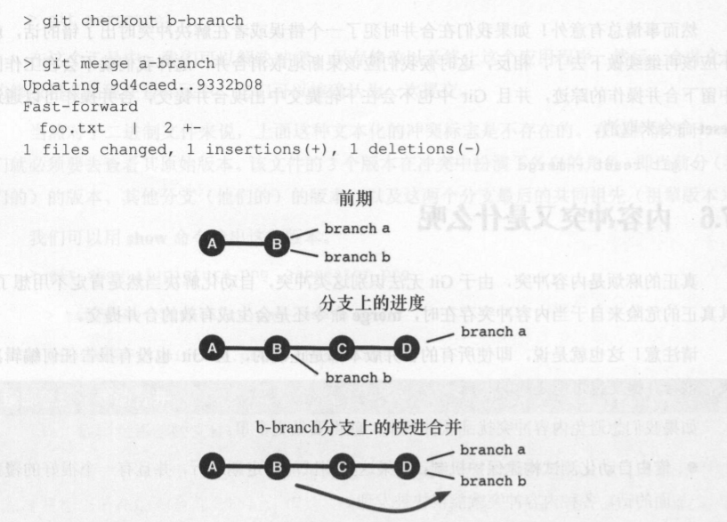
它的优点是简化了历史记录，使其线性发展；缺点是无法呈现合并历史，因此有些人可能会想要非 fast forward 的，操作如下。
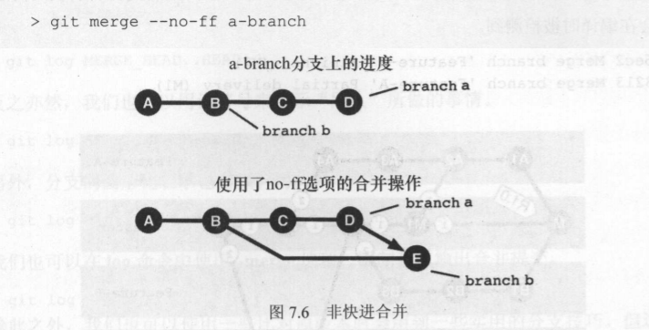
压缩合并
1 | git checkout featureBv2 origin/master |
--squash 选项接受被合并分支上的所有工作，并将其压缩至一个变更集，使仓库变成一个真正的合并发生的状态，而不会真的生成一个合并提交。这意味着你的未来的提交将会只有一个父提交，并允许你引入另一个分支的所有改动， 然后在记录一个新提交前做更多的改动。参考 pro git book 这里的 Figure 72 处。
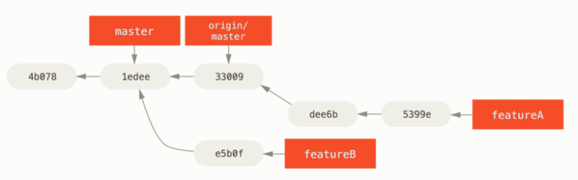
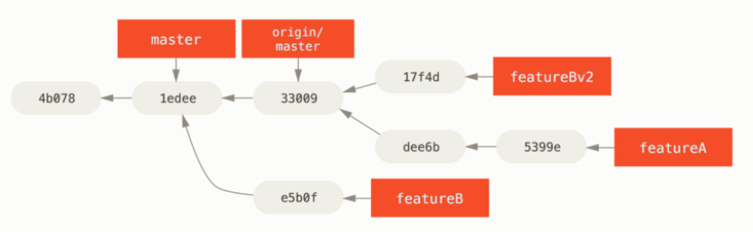
查看历史
在 log 命令中使用 .. 可以了解分支的不同之处。比如 a..b 表示来自于分支 b 但不属于分支 a 的提交。
1 | git log MERGE_HEAD..HEAD # 我们在分支上做的事情 |
使用 merge-base 命令配合 diff 命令也可以了解分支的不同。
1 | git merge-base HEAD MERGE_HEAD # 获取共同祖先提交 |
在 log 命令中使用 --merge 可以限制只输出合并提交。
1 | git log --merge |
关于 rebase
rebase 的本质是将想要移动的提交序列在目标分支上，按照同样的顺序重现一遍，图示如下。
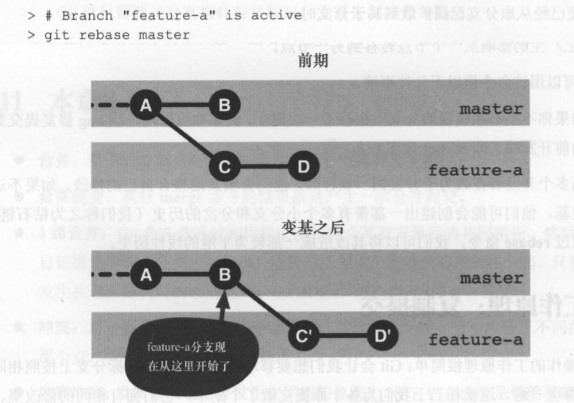
这里 git 做了几件事：
- 确认涉及到哪些提交：即在
feature-a上而不在master上的C和D - 确认目标位置：即
master上feature-a将要执行变基操作的目标提交B - 复制提交：以目标提交为基础重演提交，创建相应的
C'和D' - 重置分支：将
feature-a分支移动到上述被复制的提交的顶部，即D'
原来的 C 和 D 在 gc 之前还在版本库中，只是不可见，但依然可以通过哈希值访问。这里当然也可以用 merge，但是会产生钻石链，不够线性和清晰。
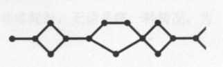
书里说通常不会直接用 git rebase，而用 git pull --rebase来将远程版本库中的修改进行变基处理，不过我还是觉得不用任何 pull 比较好。pro git book 里关于变基的这一章也很有参考意义，讲了在某种情况下使用 rebase 可能产生的错误。
冲突前后
rebase 的冲突和 merge 的冲突有区别：merge 过程中，得到的是两个分支合体后的单一提交；rebase 过程中，我们依次执行重复的几次提交，顺利情况下最后一次提交的结果会和 merge 一样，不顺利情况下则会一直被打断，需要手动解决冲突、将它们加到暂存区、再用 rebase --continue 来继续。
1 | 解决冲突 |
移植分支
图示如下，这里将 feature-a 分支移植到了 release1 分支上。
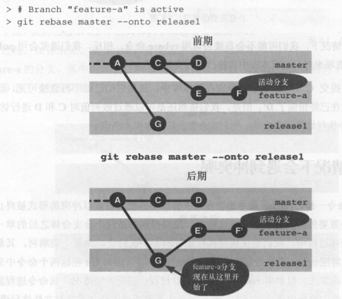
这里 git 先确认 feature-a 上所有不属于原分支 master 上的所有提交(即这里的 E 和 F)，再通过 --onto 将这些提交复制到指定位置上(即这里的 release1 分支)。
关于 fetch
fetch 的本质是从另一个版本库获取本地版本库中不存在的提交。图示如下，这里 ABC 都在本地有，所以不用取，DE 都在本地没有，所以要取。
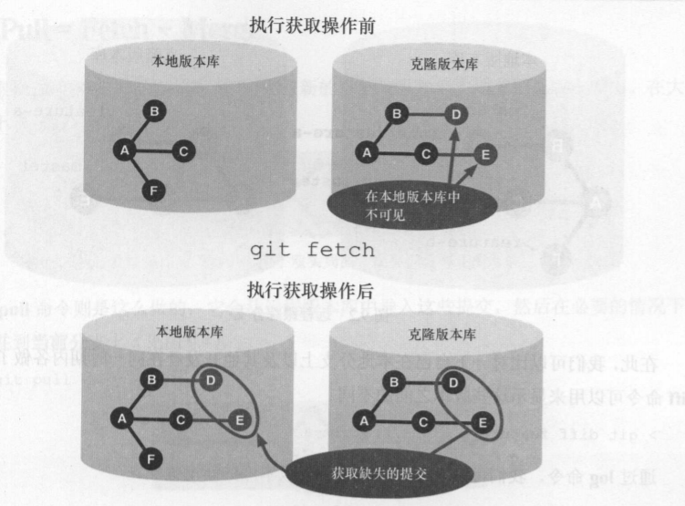
不指定参数的情况下会获取所有分支的提交，指定参数则可以只获取某个分支的提交。
1 | git fetch clone feature-b:my-feature-b |
这里获取了 clone 版本库的 feature-b 分支内容，如果本地没有 my-feature-b 分支则创建一个，如果本地有则对其进行更新。
* fetch、pull、push 都可以用冒号来重命名/转换分支。
关于 pull
pull = fetch + merge，pull --rebase = pull + rebase，图示如下。
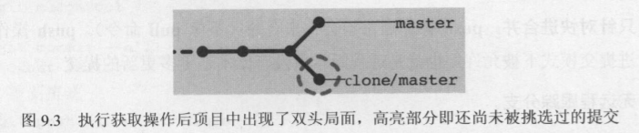
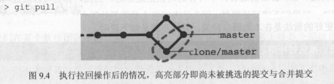
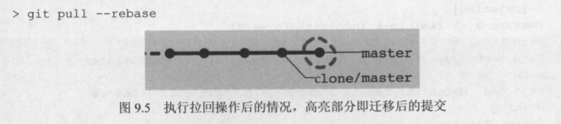
关于 tag
标签一般用来标识版本，我感觉是给某分支的某个提交起个别名。
创建标签
有两种标签，轻量标签(lightweight)和附注标签(annotated)。轻量标签只是某个特定提交的引用，本质是将“提交校验和”存储到一个文件中，而没有存储任何其它信息；附注标签则是存储在版本库中的一个完整的标签对象，含打标签者名字、邮件地址、日期时间、标签信息，它还有自己的哈希值，是可以使用 GNU Privacy Guard(GPG)签名并被校验的。
1 | 轻量标签 |
还可以对过去的提交补打标签，只要找到该提交的哈希值即可。
1 | git tag -a v1.2 9fceb02 |
删除标签
1 | 删除本地标签 |
推送标签
1 | git push origin 1.2.3.4 # 推送一个标签 |
推送操作通常不会自动传送标签，上面两个方法可以把本地设置的标签给传送过去，过程就像推送远程分支一样。
列出所有标签
1 | git tag # 列出所有标签 |
查看某个标签
1 | git show-ref --dereference --tags |
show-ref 指令加上 --tags 用来列出标签对象的提交哈希值，--dereference 则是打印相应提交对象的哈希值，它带有 ^{} 标记。
获取提交所在标签
1 | git tag --contains f63cd71 |
列出历史记录中包含该提交的所有标签，通常用来判断某一 feat 或 bugfix 是否被包含在某个版本中。